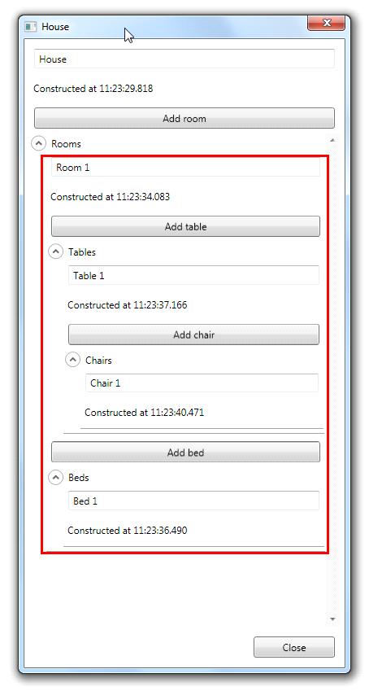

One of the issues most users of MVVM face is that “nested user controls” problem. The problem is that most (actually all that we have seen) MVVM Frameworks only support one view model for a window (or if you’re lucky, a user control). However, the “nested user controls” problem raises many questions:
- What if the requirements are to build a dynamic UI where the nested user controls are loaded dynamically when they are required?
- What about validation in nested user controls?
- When should the nested user control view models be saved?
Most MVVM developers just answer: “Put all the properties of the nested user controls on the main view model”. Say that again? Are you kidding me? That is not a real world solution for a real world problem. So, we as developers of Catel offer you a real world solution for the “nested user controls” problem in the form of the UserControl.
The real power of the UserControl class lays in the fact that it is able to construct view models dynamically based on its data context. So, the only thing the developers have to take care of is to set the right data context. Below is a graphical presentation of the “nested user controls” problem:
graph TD
subgraph Traditional["Traditional MVVM approach"]
direction TB
MW[MainWindow] --> MVM[MainWindowViewModel\ncontains ALL properties]
MVM --> P1[Control1 properties]
MVM --> P2[Control2 properties]
MVM --> P3[Control3 properties]
end
subgraph Catel["Catel approach"]
direction TB
CW[MainWindow] --> CMVM[MainWindowViewModel]
CW --> UC1[UserControl1\nown ViewModel]
CW --> UC2[UserControl2\nown ViewModel]
UC1 --> UC3[UserControl3\nown ViewModel]
end
As the images above show, the method that Catel uses to solve the problem is much more professional. Below are a few reasons:
- Separation of concerns (each control has a view model only containing the information for itself, not for children);
- User controls are built so they can be re-used. Without the user controls to be able to have their own view models, how should one actually use user controls with MVVM?
The idea behind the user control is complex, especially because XAML frameworks are not very good at runtime data context type changing. However, with a few workarounds (very well described in the source code of UserControl), it is possible to dynamically construct view models. The user control constructs the view model with or without a constructor as described earlier in this article. When the view model is constructed, the user control tries to find a (logical or visual) parent that implements the IViewModelContainer interface. Thanks to this interface, a view model can subscribe itself to a parent view model and the validation chain is created as shown below:
graph TD
A[HouseWindowViewModel] -->|validates children| B[RoomViewModel]
B -->|validates children| C[TableViewModel]
B -->|validates children| D[BedViewModel]
C -->|reports validation result| B
D -->|reports validation result| B
B -->|reports validation result| A
As the image above shows, all children in the chain are validated, and when the last child is validated, the view model reports the result of its children and itself back to its parent. This way, it is still possible to disable a command when one of the nested user control view models has an error.
Saving a chain of nested view models works exactly the same as the validation. First, the view model saves all children, then itself and finally reports back its result to the parent.
The following section presents a “real-life” example. The focus is on the user control and view model creation, not on the content of the data. The data model used is shown below:
graph TD
House --> Room1[Room]
House --> Room2[Room]
Room1 --> Table1[Table]
Room1 --> Table2[Table]
Room1 --> Bed1[Bed]
Table1 --> Chair1[Chair]
Table1 --> Chair2[Chair]
Table2 --> Chair3[Chair]
The image shows that we have a house. In that house, we have multiple rooms. In each room, there can be several tables with chairs and beds. This shows a “complex” UI tree with many different user controls (each object has its own representation and thus user control). Now our goal is to create user controls that can be used in the window that shows the full house, but also in “sub-parts” and we want to be fully independent of the HouseWindowViewModel (which is the only view model that would be created in a regular MVVM Framework).
The example below shows only the Room control and the corresponding view model. The full source code of this article is provided in the source code repository of Catel, so the whole example is available if you are interested or need a more complete example.
First, we start with a simple model. For the model, we use the ModelBase class. By using the provided code snippets, this model is setup within a minute:
/// <summary>
/// Bed class which fully supports serialization, property changed notifications,
/// backwards compatibility and error checking.
/// </summary>
[Serializable]
public class Room : ModelBase<Room>
{
#region Constructor & destructor
/// <summary>
/// Initializes a new object from scratch.
/// </summary>
public Room()
: this(NameProperty.GetDefaultValue<string>()) { }
/// <summary>
/// Initializes a new instance of the <see cref="Room"/> class.
/// </summary>
/// <param name="name">The name.</param>
public Room(string name)
{
// Create collections
Tables = new ObservableCollection<Table>();
Beds = new ObservableCollection<Bed>();
// Store values
Name = name;
}
/// <summary>
/// Initializes a new object based on <see cref="SerializationInfo"/>.
/// </summary>
/// <param name="info"><see cref="SerializationInfo"/> that contains the information.</param>
/// <param name="context"><see cref="StreamingContext"/>.</param>
protected Room(SerializationInfo info, StreamingContext context)
: base(info, context) { }
#endregion
#region Properties
/// <summary>
/// Gets or sets the name.
/// </summary>
public string Name
{
get { return GetValue<string>(NameProperty); }
set { SetValue(NameProperty, value); }
}
/// <summary>
/// Register the Name property so it is known in the class.
/// </summary>
public static readonly PropertyData NameProperty = RegisterProperty("Name", typeof(string), "Room");
/// <summary>
/// Gets or sets the table collection.
/// </summary>
public ObservableCollection<Table> Tables
{
get { return GetValue<ObservableCollection<Table>>(TablesProperty); }
set { SetValue(TablesProperty, value); }
}
/// <summary>
/// Register the Tables property so it is known in the class.
/// </summary>
public static readonly PropertyData TablesProperty = RegisterProperty("Tables", typeof(ObservableCollection<Table>));
/// <summary>
/// Gets or sets the bed collection.
/// </summary>
public ObservableCollection<Bed> Beds
{
get { return GetValue<ObservableCollection<Bed>>(BedsProperty); }
set { SetValue(BedsProperty, value); }
}
/// <summary>
/// Register the Beds property so it is known in the class.
/// </summary>
public static readonly PropertyData BedsProperty = RegisterProperty("Beds", typeof(ObservableCollection<Bed>));
#endregion
}
Next, we are going to create the view model. Again, by the use of code snippets explained earlier in this article, the view model is set up within a few minutes:
/// <summary>
/// Room view model.
/// </summary>
public class RoomViewModel : ViewModelBase
{
#region Variables
private int _bedIndex = 1;
private int _tableIndex = 1;
#endregion
#region Constructor & destructor
/// <summary>
/// Initializes a new instance of the <see cref="RoomViewModel"/> class.
/// </summary>
public RoomViewModel(Models.Room room)
{
// Store values
Room = room;
// Create commands
AddTable = new Command(OnAddTableExecuted);
AddBed = new Command(OnAddBedExecuted);
}
#endregion
#region Properties
/// <summary>
/// Gets the title of the view model.
/// </summary>
/// <value>The title.</value>
public override string Title { get { return "Room"; } }
#region Models
/// <summary>
/// Gets or sets the room.
/// </summary>
[Model]
public Models.Room Room
{
get { return GetValue<Models.Room>(RoomProperty); }
private set { SetValue(RoomProperty, value); }
}
/// <summary>
/// Register the Room property so it is known in the class.
/// </summary>
public static readonly PropertyData RoomProperty = RegisterProperty("Room", typeof(Models.Room));
#endregion
#region View model
/// <summary>
/// Gets or sets the name.
/// </summary>
[ViewModelToModel("Room")]
public string Name
{
get { return GetValue<string>(NameProperty); }
set { SetValue(NameProperty, value); }
}
/// <summary>
/// Register the Name property so it is known in the class.
/// </summary>
public static readonly PropertyData NameProperty = RegisterProperty("Name", typeof(string));
/// <summary>
/// Gets or sets the table collection.
/// </summary>
[ViewModelToModel("Room")]
public ObservableCollection<Models.Table> Tables
{
get { return GetValue<ObservableCollection<Models.Table>>(TablesProperty); }
set { SetValue(TablesProperty, value); }
}
/// <summary>
/// Register the Tables property so it is known in the class.
/// </summary>
public static readonly PropertyData TablesProperty = RegisterProperty("Tables", typeof(ObservableCollection<Models.Table>));
/// <summary>
/// Gets or sets the bed collection.
/// </summary>
[ViewModelToModel("Room")]
public ObservableCollection<Models.Bed> Beds
{
get { return GetValue<ObservableCollection<Models.Bed>>(BedsProperty); }
set { SetValue(BedsProperty, value); }
}
/// <summary>
/// Register the Beds property so it is known in the class.
/// </summary>
public static readonly PropertyData BedsProperty = RegisterProperty("Beds", typeof(ObservableCollection<Models.Bed>));
#endregion
#endregion
#region Commands
/// <summary>
/// Gets the AddTable command.
/// </summary>
public Command AddTable { get; private set; }
/// <summary>
/// Method to invoke when the AddTable command is executed.
/// </summary>
private void OnAddTableExecuted()
{
Tables.Add(new Models.Table(string.Format("Table {0}", _tableIndex++)));
}
/// <summary>
/// Gets the AddBed command.
/// </summary>
public Command AddBed { get; private set; }
/// <summary>
/// Method to invoke when the AddBed command is executed.
/// </summary>
private void OnAddBedExecuted()
{
Beds.Add(new Models.Bed(string.Format("Bed {0}", _bedIndex++)));
}
#endregion
}
As shown, the view model can only be constructed by passing a Room model object. It is important to be aware of this construction. The reason that there is no empty constructor is because there is no support for views that do not represent a Room model.
In the view model, the properties of the Room model are mapped by the use of the Model attribute and the ViewModelToModel attribute. Last but not least, commands are defined to be able to add new tables and beds to the Room model.
Another way to add a new user control is to use the item templates
Now the model and the view model are fully set up, the last thing to do is to create the actual view. To accomplish this, add a new WPF user control to the project. First thing to do is to implement the code-behind, since that is the easiest to do:
<summary>
/// Interaction logic for Room.xaml
/// </summary>
public partial class Room : UserControl
{
/// <summary>
/// Initializes a new instance of the <see cref="Room"/> class.
/// </summary>
public Room()
{
// Initialize component
InitializeComponent();
}
}
The only thing we changed from the default user control template is that the user control now derives from Catel.Windows.Controls.UserControl control instead of the default System.Windows.Controls.UserControl control. This is all for the code-behind. The following section covers the view.
The last thing to do now is the actual xaml view. For the sake of simplicity, the actual content is left out (it is just a grid with a textbox and itemscontrols for the children):
<catel:UserControl x:Class="Catel.Articles._03___MVVM.Examples.NestedUserControls.Room"
xmlns="http://schemas.microsoft.com/winfx/2006/xaml/presentation"
xmlns:x="http://schemas.microsoft.com/winfx/2006/xaml"
xmlns:catel="http://schemas.catelproject.com"
xmlns:NestedUserControls="clr-namespace:Catel.Articles._03___MVVM.Examples.NestedUserControls">
<!-- For the sake of simplicity, the content is left out -->
</catel:UserControl>
A few things are important to notice in the xaml code shown above. The first thing to notice is that (like the code-behind), the base class is now catel:UserControl instead of UserControl.
That is all that can be learned about solving the “nested user control” problem. We have set up the model, view model and finally the view. The following screenshot shows how it looks. Note that the view models are constructed on-demand:

The red border is the control that we just created. It shows the name of the room, the view model construction time and the child objects (inside expanders).